First of all, this entire website is a project! Although they aren't actual coding languages, I learned HTML and some
CSS to create an entirely customizable website from scratch. No website templates were used. Even the logo was drawn by hand!
I'm now a third-year student at the University of Toronto, and I've done various projects throughout my time here.
Below are these projects (from most to least recent).
Workflow Automation with n8n (Jun 2025 - Aug 2025)
Skills: AI, JavaScript, TypeScript, JSON, APIs
I had an internship this summer working at a small startup,
Varritech Development Services, which focuses on using AI-powered development to develop apps and websites. I had the opportunity
to work on 9 automation workflows on the n8n platform, integrating third-party APIs, custom webhooks, and JavaScript for dynamic JSON data handling.
I collaborated with a team of 2 developers while independently leading the majority of projects, ensuring timely delivery and maintainable code.
Some highlights for my projects include:
Statement of Work (SOW) Automator: Developed a workflow that generated full project documents with AI-driven stack recommendations.
Implemented data parsing and NLPs to streamline planning, becoming the company's primary SOW tool.
Employee Performance Dashboard: Developed an internal monitoring system that aggregated data from Slack, GitHub, and ClickUp via
API integrations. Designed custom KPIs (e.g., response latency, commit frequency, logged hours, video review time) and automated
reporting dashboards to provide actionable insights for management.
Order and Inventory Manager: Built an automation for a real company client, which linked Telegram messages to an Airtable database in real time.
It enabled instant inventory/order updates using custom webhooks and REST API calls. Incorporated JSON parsing & error-handling to ensure
reliability.
AI Task Generator for ClickUp: Engineered an automation pipeline that required minimal project input and generated detailed,
customized task lists in ClickUp using AI models, acting as a virtual project manager.
Below are some brief snippets of my workflows.
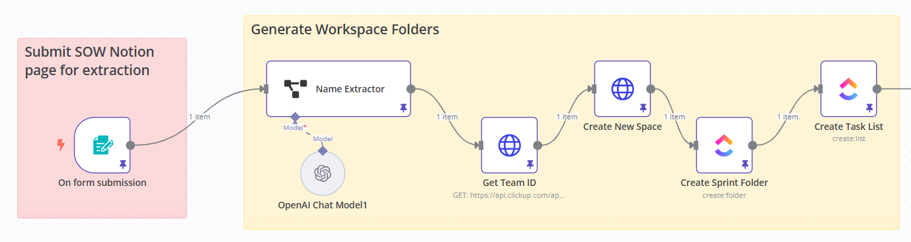
This workflow snippet is the beginning of the virtual project manager workflow, which generated detailed,
customized task lists in ClickUp, as well as supplementary comments, using AI models with minimal input. It starts by analyzing this
input, which is the project's Statement of Work, using OpenAI. Then, it makes several HTTP requests to the ClickUp API (both GET and
POST requests) to create folders.
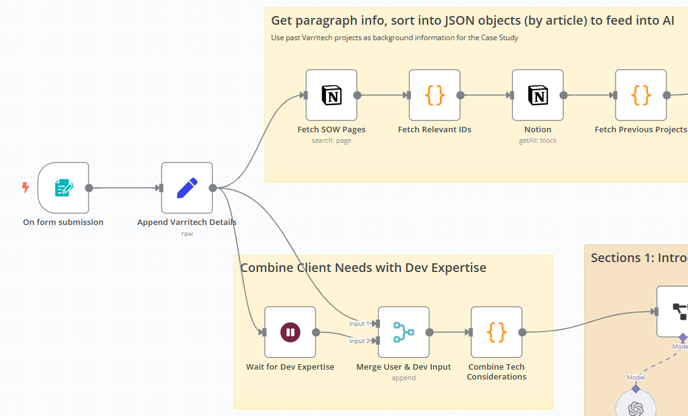
This workflow snippet displays the starting nodes for the SOW Automator workflow, which has improved project efficiency and is
implemented throughout the company. It takes basic project information and responds with a fully-written Statement of Work.
Prioritizing company input, it infers with AI to create sections such as the Scope & Objectives, Technical Stack, and Deliverables by Phase.
Arduino-Powered LED Console (Jun 2025 - Aug 2025)
Skills: Arduino, Circuit Design, Game Logic
I wanted to refresh my hardware skills while working in software this past summer, so this personal project involved making a custom handheld
game console from scratch using Arduino, breadboards, and discrete components like resistors and LEDs. Key features include:
A pixel-based display created from LEDs
Real-time gameplay mechanics
Custom circuit design and game logic developed in Arduino, implementing a Chrome Dino-inspired game
Below are some project photos.
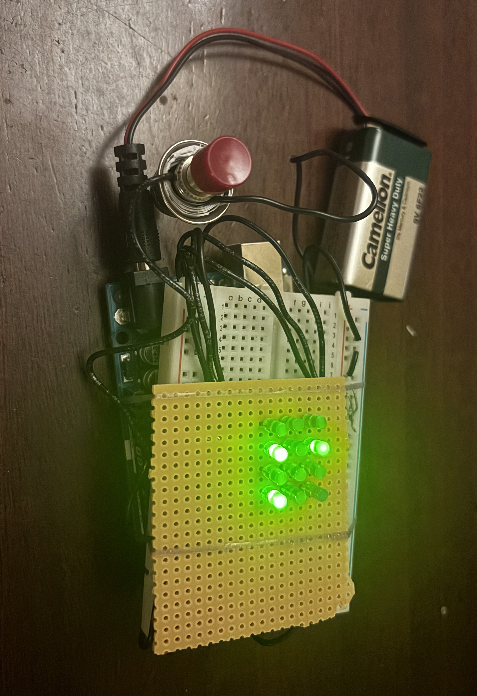
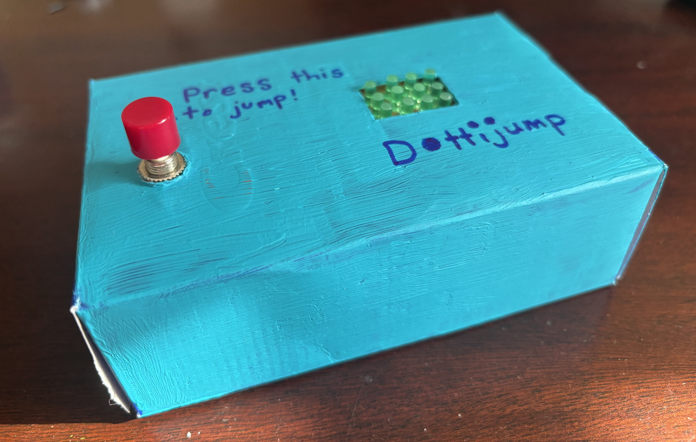
The interior console mechanics incorporated an Arduino board, powered by a 9 V battery, complete with a breadboard containing
the custom circuit design. The console box was painted and designed in the style of a retro console.
The user controls their character, resting near the bottom left of the display, by pressing the button to jump. It
must dodge the continuously approaching obstacles, and the game resets once the character hits an obstacle.
Appledrop on FPGA Board (Mar 2025 - Apr 2025)
Skills: C, FPGA
This project involved a lot of creativity and design, as it involved designing and programming an original game in C for the
DE1-SoC FPGA board. Some key features include:
A variety of board features to enrich the game, including VGA output, PS/2 keyboard input, pushbuttons, switches, LEDs, and
seven-segment displays
Advanced coding structure, leveraging both leveraging both interrupts and polling for responsive real-time control of multiple I/O devices
Game mechanics incorporating difficulty selection, pausing, high score tracking, and strike systems, using FSM logic for state transitions
(start menu, gameplay, game over, restart)
Below are some photos:
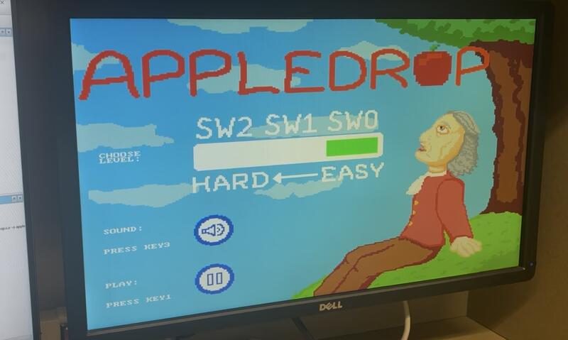
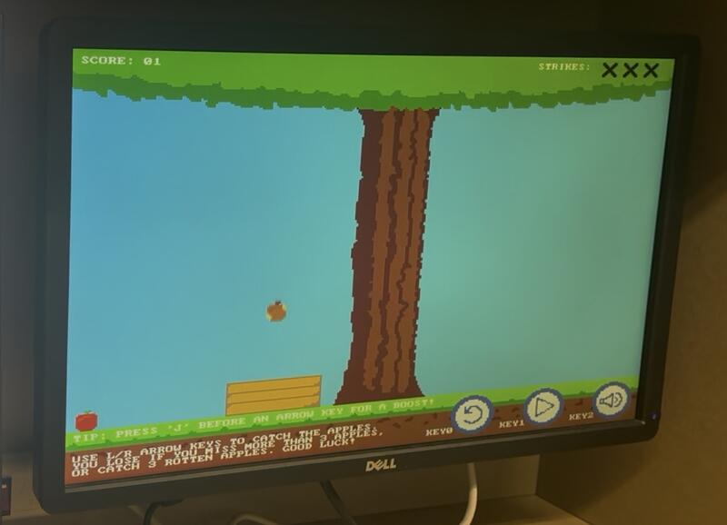
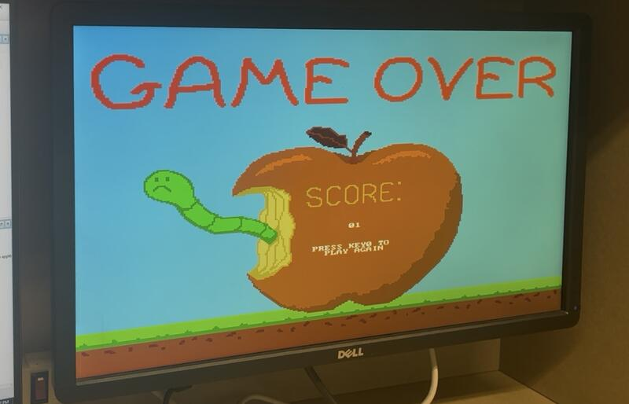
Users can adjust difficulty using the DE1-SoC switches, and adjust sound/initialize the game using the pushbuttons.
The user must use the PS/2 keyboard arrow keys to maneuver their basket and catch all the falling apples. Strikes, incremented when a rotten apple
is accidentally caught, are listed in the top right corner of the gameplay screen. When the user has exceeded 3 strikes in catching rotten apples
or missing good apples, the user is redirected to a game over screen.
A demo shows some of the various game features.
HF Radio Bandpass Filter, Limiter, Quadrature Mixer, and I/Q Amplifier (Jan 2025 - Apr 2025)
This group project required us to develop a radio receiver by applying electrical theory to create a custom receiver design, while abiding
by design constraints. My responsibilities included:
Designing the bandpass filter component, opting for a passive second-order Butterworth filter configuration to maximize signal integrity
of the radio message, successfully producing frequency cutoffs at approximately 8 and 16 MHz.
Simulating my circuit design using the LTSpice simulation software, and testing using breadboarding and lab instrumentation like spectrum
analyzers and oscilloscopes.
Designing the PCB using Altium, creating schematics and layouts, and assisting in board assembly through a combination of soldering oven
and hand-soldering methods.
Serving as Project Manager, using Gantt charts to keep the team on track for completing various deliverables and engineering reports.
Below are some images of the PCB and results.
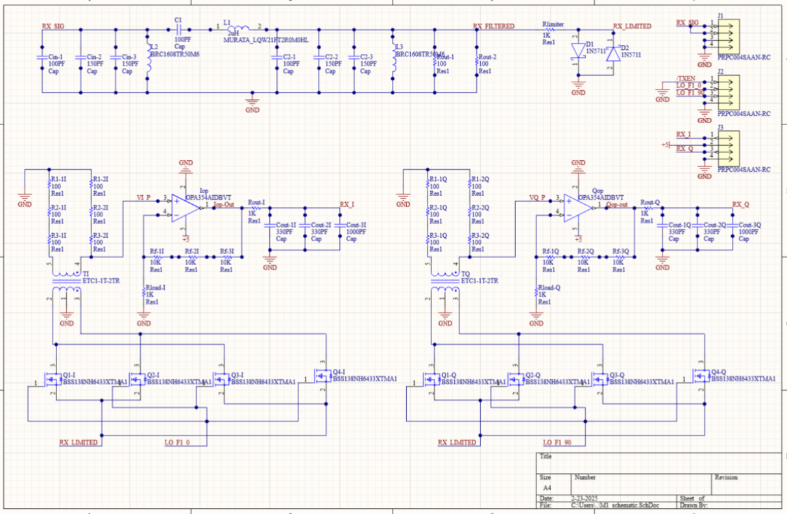
Our entire circuit schematic in Altium.
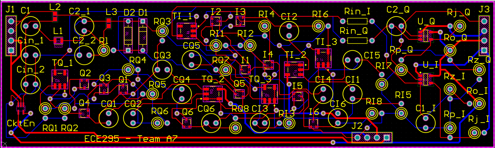
Our circuit design, which I implemented as a PCB layout.
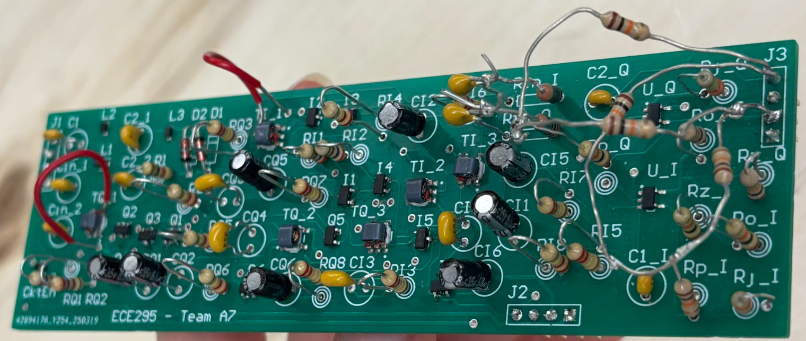
Our final physical PCB, which incorporated various testing points through hairpin configurations for resistor soldering.
Some fixes, such as extra wiring and a voltage divider, were required to optimize results.
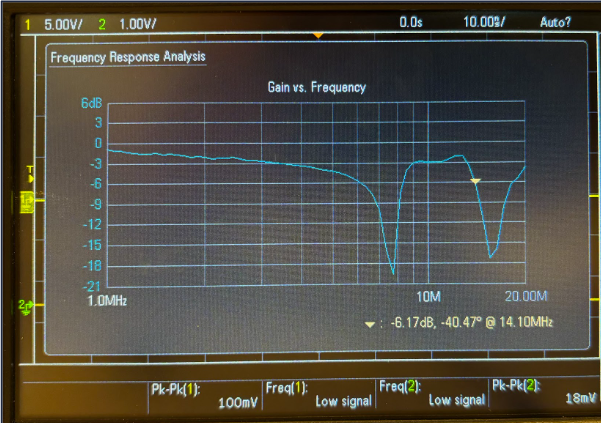
After successful circuit simulation, my bandpass filter design produced our desired results, with cutoffs at 8.06 and
14.10 MHz (this fell within our error tolerance).
This project strengthened my hardware programming skills, as it required me to program a game entirely using the Verilog HDL.
I developed a hardware implementation of the classic game Snake. This project included:
Custom game logic and VGA display output on the DE1-SoC FPGA board
Finite state machines to control game mechanics and synchronization for effective digital system design
A mix of combinational and sequential logic to program the snake as a continuously moving shift register
Below are some photos:
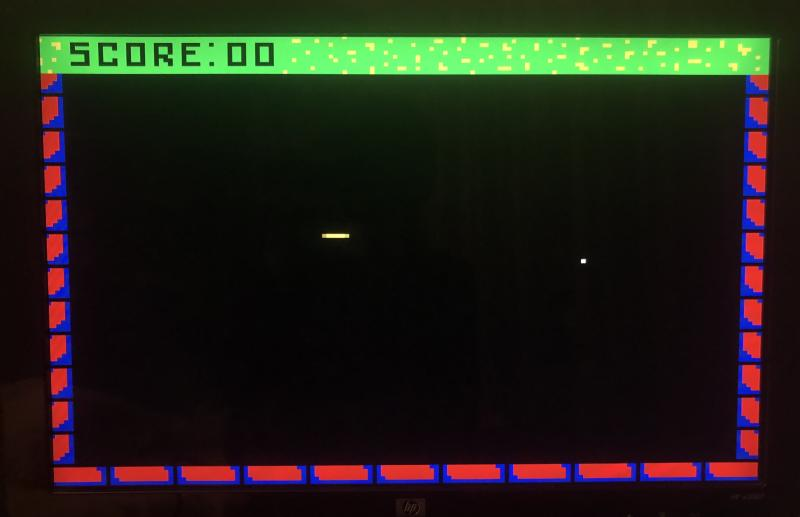
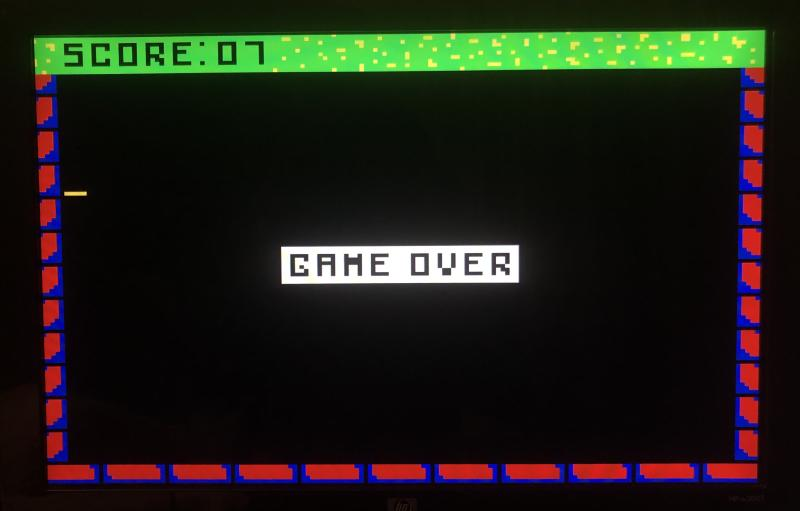
The user uses the KEY pushbuttons on the DE1-SoC board to control their snake in 4 directions, ending the game once
the border is hit.
Here is a game demo showing a game from start to finish. The game is technically called "Worm", as our character is
burrowing underground (hence the grass at the top of the game screen)!
In a 6-person team, we created a Python-based news scraper focused on sustainable aviation fuel updates. My roles included:
Serving as Project Manager, ensuring timely delivery through Gantt charts and weekly team meetings
Coordinating with a real client company, SustainableAF, using feedback to contribute to an endorsed final solution integrating JSON, SQL databases,
search engine APIs, and AI-driven quality assurance
Here is a screenshot of our scraper prototype:
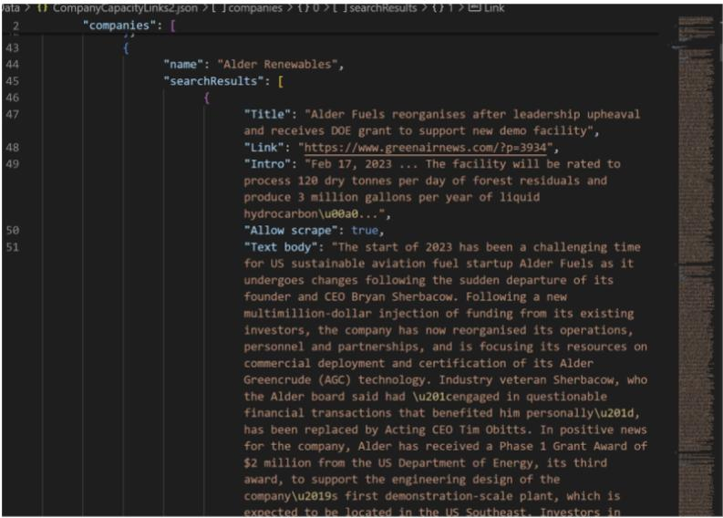
For our project, a fully working prototype was made, which was tested against a strict set of categories to compare
it against the original client database.
Improving Hart House Theatre Accessibility (Sep 2023 - Dec 2023)
Skills: Engineering Design, Project Management
In a 5-person team, we designed a creative solution for a university theatre. This included:
Co-developed an innovative foldable theatre seating redesign, enhancing accessibility and inclusion for diverse audiences
while applying principles from the engineering design process
Served as Project Manager, coordinating team schedules and contributing to two major engineering reports documenting concept
development and design implementation
Here is a 3D rendering of one of our redesigns:
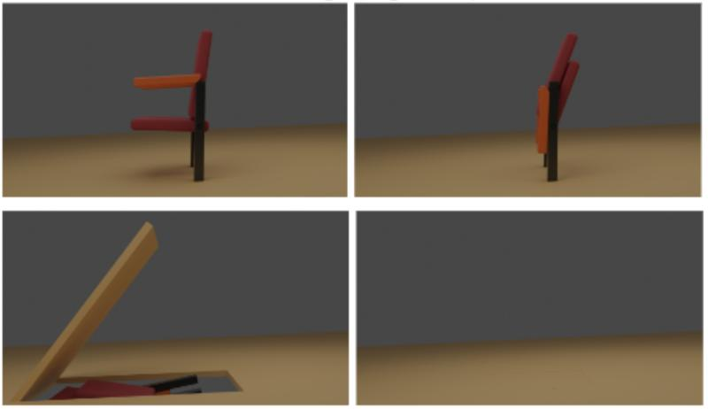
Hundreds of solutions were drafted between all members, but we decided to create an innovative approach to theatre seating:
making the seats completely foldable so that they could easily allow wheelchair users to sit in any section of their choosing.